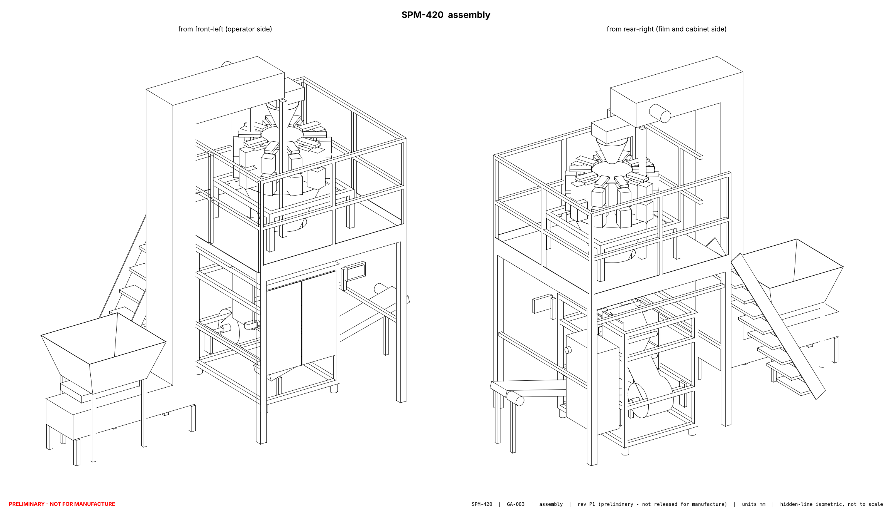
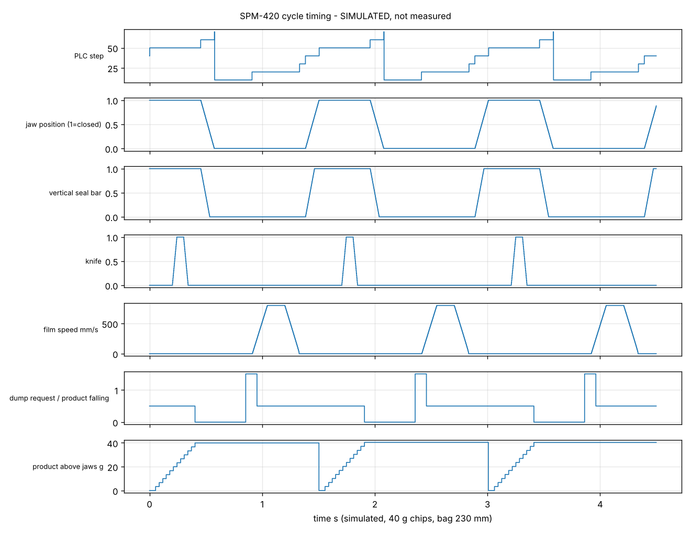
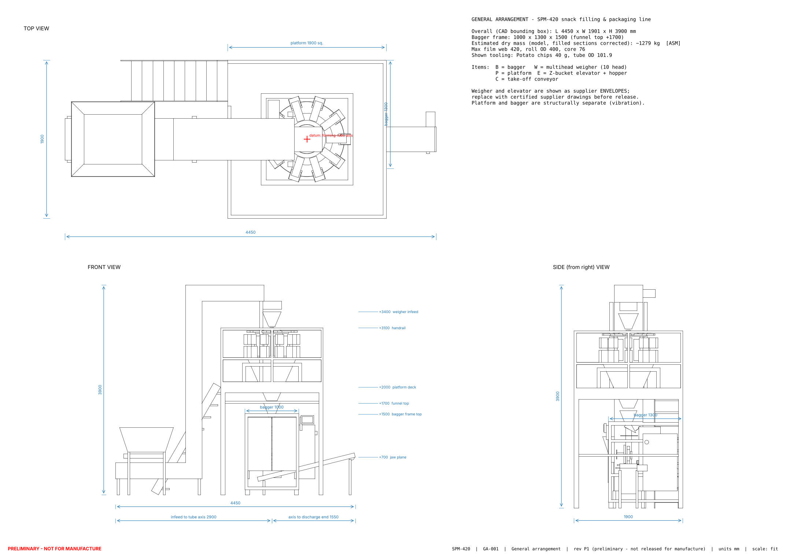
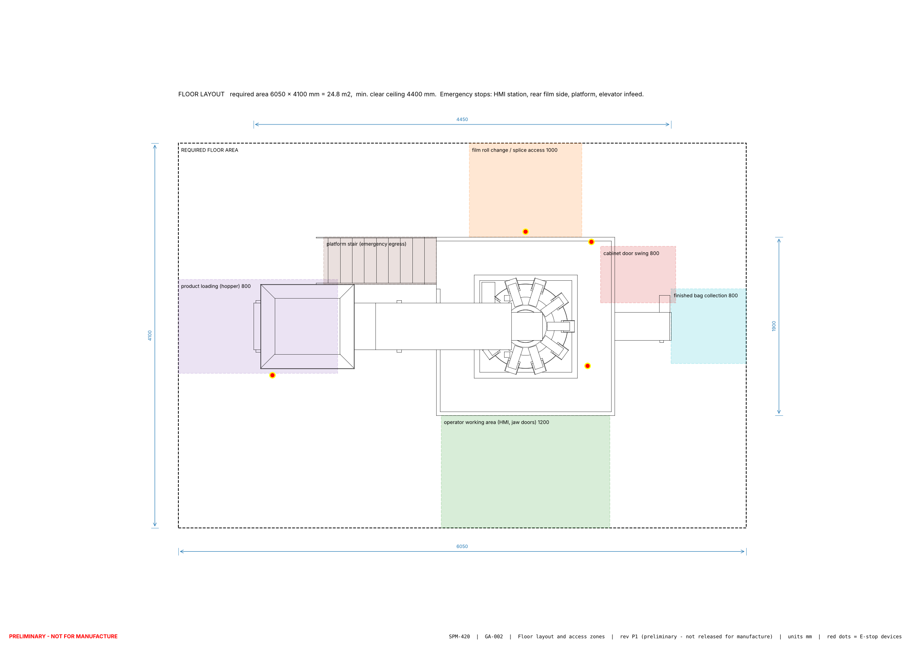

Multihead weigher with a vertical form-fill-seal bagger for potato chips, crispy snacks, crackers and small biscuits

The SPM-420 is a complete snack packaging line. Product is lifted to a 10-head combination weigher, which drops exact charges into a vertical bagger that forms pillow bags from roll film, fills, seals and cuts them. The bagger is designed in full; the weigher and the elevator are specified as purchased units with defined interfaces.
The reference for the design was a short manufacturer video of a chips and biscuits filling machine. The video frames could not be viewed while the design was prepared, so the reference analysis is based on the video's title, the publisher's catalogue and published data for this machine class. The design follows the most common configuration for snacks, a multihead weigher feeding a vertical form-fill-seal bagger. Please confirm this against the video before detail design begins.
| Area | State | Meaning |
|---|---|---|
| Concept, layout, footprint | Complete | Derived from selected components; final heights wait for weigher and elevator supplier drawings. |
| Calculations | Complete | Cycle, drive, pneumatics, heating, electrical load, consumption. Based on stated assumptions. |
| 3D model and drawings | Layout level | Correct envelopes and interfaces; detailed part drawings with tolerances still to be made. |
| Electrical design | Design level | Architecture, protection, safety circuits, I/O, cables; production schematics still to be drawn. |
| PLC program and HMI | Simulated | Logic tested in simulation; not yet compiled in Siemens TIA Portal. |
| Monitoring software | Runs | Tested with simulated machine data; connection to a real PLC not yet tested. |
| Performance figures | Calculated / simulated | No figure has been measured. Validation needs the built machine. |
| Safety | Draft | Concept and preliminary risk assessment; must be completed and validated on the built machine. |
The bagger works in a fixed cycle. For the reference recipe (40 g chips, 230 mm bag, 40 bags/min) one cycle takes 1.5 s. The times below come from the simulation of the PLC program and are design values, not measurements.
| Step | Phase | Time, s | What happens | Controlled by |
|---|---|---|---|---|
| 10 | Dump request | −0.056 | Shortly before the film pull, the PLC tells the weigher to drop the next charge. The charge needs about 0.70 s to fall to the jaws. | PLC, weigher |
| 20 | Pull film | 0.000–0.422 | Pull belts draw 230 mm of film down over the forming tube. | Servo drive |
| 30 | Settle | 0.422–0.474 | Short pause so the film is still. | PLC timer |
| 40 | Close jaws | 0.474–0.596 | Horizontal jaws and the vertical seal bar close. | PLC, valves |
| 50 | Seal and cut | 0.596–1.048 | Two seals are made at once; the knife cuts between them at 0.798 s. The new charge lands on the closed jaws from 0.646 to 0.996 s. | PLC timer |
| 60 | Open jaws | 1.048–1.170 | Jaws, seal bar and knife retract; the finished bag is on the conveyor. | Spring-return valves |
| 10 | Wait | 1.172–1.504 | The PLC holds until the next cycle is due and the weigher is ready. | PLC pacing |



| Dimension | Value, mm | Set by |
|---|---|---|
| Line length | 4450 | Elevator infeed hopper to end of the take-off conveyor |
| Line width | 1900 | Weigher platform; the bagger and film roll fit inside |
| Line height | 3900 | Elevator head above the weigher |
| Bagger frame | 1000 × 1300 × 1500 | Film width, film path, jaw stroke, bag drop height |
| Floor area with clearances | 6050 × 4100 | 1200 operator front, 1000 film change rear, 800 at each end |
| Clear ceiling height | 4400 | Room to lift weigher hoppers and elevator parts |
| Weigher platform deck | +2000 | Follows the weigher chute; supplier dependent |
| Jaw plane | +700 | Conveyor height plus the longest bag |
All dimensions are preliminary. They become manufacturing dimensions only after the weigher and elevator suppliers' certified drawings are received and the first assembly is checked against the layout.
Everything below exists as files in the project repository and can be handed over. Editable source formats are included so that every item can be changed and regenerated.
| Deliverable | Contents | Formats | State |
|---|---|---|---|
| Reference analysis | Machine principle, the ten requested identifications, published comparison data, checklist for confirming the video | Document | Inferred |
| Engineering specification | Functional, performance, utility and design requirements with IDs | Document | Complete |
| Engineering calculations | Bag geometry, cycle, servo sizing, sealing forces, air, heating, electrical load and cables, consumption, footprint, structure | Document + calculation script | Complete |
| Mechanical design | Choice of dosing method, every bagger sub-assembly with sizes, materials and mounting, fragile-product measures | Document | Layout level |
| 3D model | Complete assembly with 22 named parts, exploded view, one file per part | STEP, STL, PNG, PDF, parametric source | Layout level |
| Drawings | General arrangement, floor layout, 22 component sheets | PDF, DXF, PNG | Layout level |
| Electrical design | Architecture, power distribution, safety circuits, motor, heater and sensor wiring, cable schedule, terminal plan, panel layout | Documents, CSV | Design level |
| Bill of materials | 77 lines with specification, supplier class, model number where verified, price estimate, three configurations | CSV + budget script | Estimates |
| PLC program | Siemens S7-1200 Structured Text: bag cycle, film pull, temperature control, modes, alarms; 65 I/O points, 32 alarms | TIA Portal import sources, CSV | Simulated |
| HMI | Specification of 14 screens, 57 tags with limits and user levels, clickable browser prototype | Document, CSV, HTML | Prototype |
| Monitoring software | Production statistics, batch records, alarm history, maintenance tracking; read-only towards the PLC | Python, React, PostgreSQL, Docker | Runs |
| Weigher algorithm | Combination-weighing routine for a self-built prototype weigher | C source + tests | Tested on PC |
| Simulation | PLC logic against a machine model, 12 scenarios including faults; weigher statistics | Python, results | Complete |
| Manufacturing and assembly guide | Fabrication, tolerances, tools, assembly sequence, film threading, format change, wear parts | Documents | Complete |
| Safety documentation | Standards list, preliminary risk assessment, lockout and cleaning procedures | Documents | Draft |
| Testing and calibration | Test plan with acceptance criteria, commissioning checklist, calibration procedures | Documents | Complete |
| Budget | Three configurations in USD and IQD | Document | Estimates |
| Engineering report | Findings, assumptions register, limitations, next steps | Document | Complete |
| Check | Result | What it does not prove |
|---|---|---|
| PLC logic against a machine model: normal running, warm-up, empty hopper, film out, wrong weight, jams, servo fault, over-temperature, sensor failure, power loss, emergency stop, air loss, door opening | 12 scenarios, 51 checks, all pass | That the Siemens source compiles, or that real actuators and product behave like the model |
| Combination weighing at 40 g (20,000 simulated dumps) | Mean 40.5 g, standard deviation 0.7 g, 1.4 % give-away, no bag below the legal tolerance | Real weigher performance: depends on the product and the supplier's unit |
| Weigher algorithm against brute force (20,000 random cases) | Identical results | Behaviour on a microcontroller |
| Monitoring software: 8 automated tests plus a live browser run | Pass | Connection to a real PLC |
| HMI prototype: login, all screens, start, emergency stop, reset | Pass in a browser | The real Siemens HMI project |
| 3D model against the calculated footprint | Bounding box equals 4450 × 1900 × 3900 mm | Detailed interferences and manufacturability |
Finding these is the purpose of the simulation. It does not show that no other defects remain.
A design package cannot replace physical equipment, licensed software, qualified people or measurements. These items have to come from the project.
| Item | Reason |
|---|---|
| 10-head multihead weigher | A precision instrument with load cells, its own controller and legal-metrology approval. Economy class about 9,000 USD; branded and approvable units cost much more. |
| Z-bucket elevator with infeed hopper | Standard product; buying is cheaper than building. About 2,800–4,500 USD. |
| Forming collar and tube, one set per bag width | Specialist part; its shape decides whether the film runs straight. |
| Air compressor with dryer and filters | Only if the factory has no clean, dry compressed air. |
Siemens PLC with I/O modules, 7" touch panel, servo drive and motor, two frequency inverters and motors, safety relays, emergency-stop buttons, coded door switches, sensors, pneumatic cylinders and valves, cartridge heaters, thermocouples, stainless enclosure, cables and terminals. All are in the bill of materials. Three order numbers there are marked for confirmation by the distributor.
| Role | Task |
|---|---|
| Mechanical designer | Review the part drawings and sign them for manufacture. |
| Welder and machinist | Fabrication to the drawings and tolerances. |
| Electrician / panel builder | Build and test the cabinet and field wiring to IEC 60204-1. |
| PLC engineer | Compile, download and commission the program on the machine. |
| Weigher supplier technician | Install, calibrate and tune the weigher for each product. |
| Safety assessor | Complete the risk assessment and validate the safety functions on the built machine. |
| Conformity body | Local approval (COSQC in Iraq), or CE assessment if the machine is exported. |
| Measure | Why it matters |
|---|---|
| Bulk density of each product (1 L cylinder, five repeats) | Bag size |
| Film data sheet and seal trials on a test jaw | Seal temperature and time; whether the jaw cylinder is strong enough |
| High-speed video of the product falling (a 240 fps phone is enough) | Setting the weigher drop time |
| Film pull force (spring scale) | Confirms the servo selection |
| Supply voltage, earthing system, summer hall temperature | Electrical protection and cabinet cooling |
| Supplier quotations and certified drawings | Replace price estimates and preliminary dimensions |
Floor space of about 6 × 4 m with 4.4 m clear height; 400 V three-phase 16 A supply; compressed air at 0.6 MPa; film rolls and product for trials; certified test weights; spare knives, PTFE tape, belts and heaters.
Several items listed above as needing a specialist tool can still be prepared, at least in part, as documents. Each would shorten the work of the people in section 6 but still needs their review.
| Item | What can be produced | What still needs a person or tool |
|---|---|---|
| Part drawings for manufacture | Detailed drawings with dimensions, tolerances, materials and surface finish for the machined and sheet-metal parts (jaws, carriages, rollers, shafts, funnel, chutes), generated from the parametric model | Review and signature by a mechanical designer; confirmation against the purchased forming set |
| Electrical schematic sheets | Numbered schematic pages for power, safety, PLC I/O and motors as PDF and DXF, drawn from the existing design | Check against the actual devices' manuals by an electrician; redraw in an ECAD tool if the panel builder requires one |
| TIA Portal import files | PLC tag table, HMI tag list and alarm texts as Excel files for TIA Portal's import function | The import itself and the HMI screen building in TIA Portal; format checked against the TIA version used |
| Independent syntax check of the PLC logic | A port of the program to standard IEC 61131-3 Structured Text, compiled with an open-source compiler if one can be installed | Final compilation in TIA Portal, which only a Siemens licence can do |
| Safety calculation input | Prepared SISTEMA input: safety functions, structure, component list with the reliability values from manufacturer data sheets | Running SISTEMA and validation on the machine by a competent person |
| Requests for quotation | Ready-to-send technical requests for the weigher, elevator, forming sets, fabrication and panel build, with the interface data each supplier needs | Sending them and negotiating |
| Video and photo analysis | Frame-by-frame analysis of videos you send: the reference clip, product fall timing, seal trials | Recording the videos |
| Operator documentation in Arabic | Operator instructions, HMI texts and safety labels in Arabic | Review by a native-speaking operator |
| Updated design from real data | Recalculation of drawings, code and budget once measurements and quotations arrive | Providing the data |
Prices are estimates made without supplier quotations, except two items whose range comes from public supplier listings. Exchange rate 1 USD = 1320 IQD (Central Bank of Iraq cash selling rate, November 2026). Freight, customs and local margins are covered only by the contingency line.
| Configuration | USD | IQD | Accuracy |
|---|---|---|---|
| 1. Educational prototype | 13,993 | 18,471,024 | ±40 % |
| 2. Semi-industrial machine | 55,919 | 73,812,816 | ±30 % |
| 3. Industrial machine | 135,083 | 178,309,296 | ±35 % |
| 1. Educational prototype | 2. Semi-industrial | 3. Industrial | |
|---|---|---|---|
| Purpose | Teach and prove the sequence | Small factory production | Continuous production with quality records |
| Frame | Aluminium profile, bench size | Welded stainless steel | Welded stainless, hygienic detailing |
| Weighing | Single self-built weigh head | Economy 10-head weigher | Branded 10/14-head, approvable for trade |
| Control | S7-1200 and 4" panel | S7-1200, 7" panel, safety relays | Fail-safe S7-1200, 7" panel, monitoring PC |
| Quality devices | None | None (manual sampling) | Checkweigher, metal detector, date coder, nitrogen flush |
| Speed (calculated) | 8–15 bags/min | 30–45 bags/min | 40–60 bags/min |
| Selling food | No | After safety validation and hygiene review | Yes, after conformity assessment |
Running cost (calculated, semi-industrial at 40 bags/min): energy and film ≈ 25.8 USD per hour, about 12.7 USD per 1000 bags. Film is about 98 % of this figure, so bag length matters far more than energy use. Labour, maintenance and depreciation are not included.
| Issue | Detail | How it is closed |
|---|---|---|
| Jaw sealing force | The selected cylinder gives 1683 N against an assumed need of 2304 N. Three remedies are prepared: narrower seal lands, a larger cylinder, or a toggle linkage. The frame is sized for the largest option. | Seal trials on the real film |
| Weigher drop timing | The drop is set 55 ms before the film pull. In the model this works between about 10 and 100 ms. | High-speed video per product |
| Weight errors | The bagger cannot detect a wrong bag weight; this depends on the weigher and, for products sold by weight, on a checkweigher. | Decision on the quality configuration |
| PLC program | Not yet compiled in TIA Portal; first import may show syntax errors. | Compile and bench test |
| Speed limit | Pneumatic jaws limit the reference bag to about 49 bags/min. Faster speeds need servo-driven jaws, a different mechanism. | Decision if a higher speed is required |
| Cabinet temperature | About 45 °C inside at 35 °C hall temperature. A filter fan or cooler is specified for hot halls. | Site survey |
| Reference machine | The configuration is inferred, not observed from the video. | Confirm against the clip |
| Product and site data | Bulk densities, film properties, fall times, supply and earthing are assumed. | Measurements in section 6 |